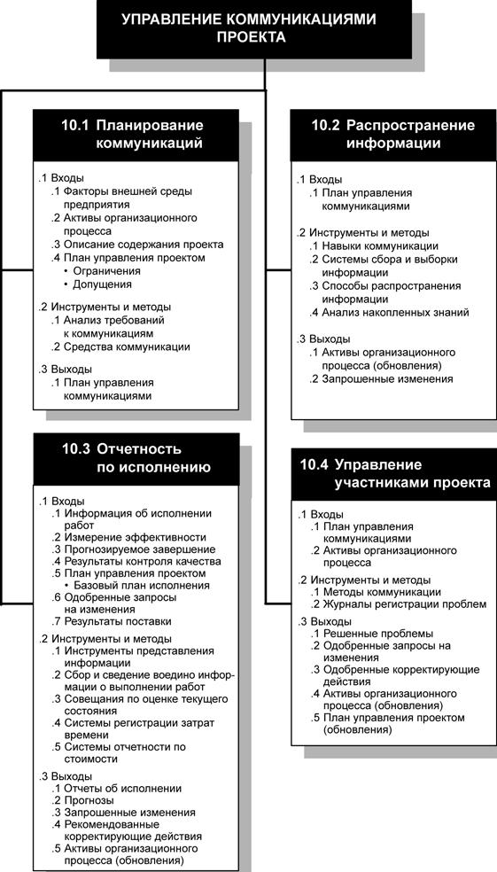
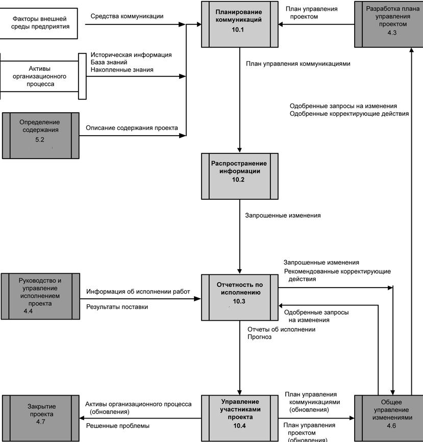
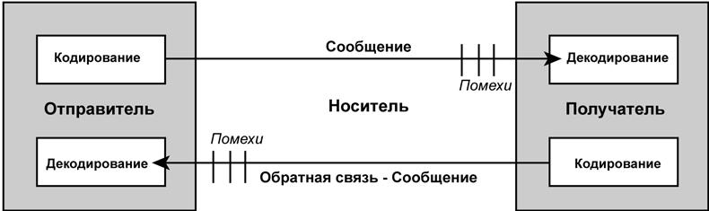

Введение
Управление коммуникациями проекта - это область знаний, включающая в себя процессы, необходимые для своевременного создания, сбора, распространения, хранения, получения и, в конечном итоге, использования информации проекта.
Процессы управления коммуникациями проекта предусматривают создание необходимых связей между людьми и информацией, которые требуются для успешного осуществления коммуникаций. Менеджеры проектов могут тратить чрезмерно много времени на коммуникации с командой проекта, участниками проекта, заказчиком и спонсором. Все, кто так или иначе вовлечен в проект, должны хорошо понимать, насколько коммуникации отражаются на протекании проекта в целом. На рис. 13.1 приводится общая схема процессов управления коммуникациями проекта, а на рис. 13.2 показана диаграмма зависимостей этих процессов и их входы, выходы и другие процессы из данной области знаний.

Рисунок 13.1 - Общая схема управления коммуникациями проекта

Рисунок 13.2 - Диаграмма зависимости процессов для процесса управления коммуникациями проекта
Процессы управления коммуникациями проекта включают в себя следующие элементы:
10.1 Планирование коммуникаций - определение потребностей участников проекта в коммуникации и информации.
10.2 Распространение информации - своевременное предоставление необходимой информации участникам проекта.
10.3 Отчетность по исполнению - сбор и распространение информации о выполнении работ. Эта информация включает в себя отчеты о текущем состоянии, оценку прогресса и прогнозирование.
10.4 Управление участниками проекта - управление коммуникациями в целях удовлетворения требований участников проекта и решения возникающих проблем.
Навыки коммуникации связаны с коммуникациями управления проектом, но это не одно и то же. Искусство коммуникации - весьма обширная область, включающая в себя разнообразные знания, в том числе:
- Модели отправитель-получатель. Цепочки обратной связи и препятствия при коммуникации.
- Выбор способа связи. Решение, как именно будет осуществляться коммуникация: письменно или устно, в виде неофициальной записки или официального отчета, лично или по электронной почте. Выбор способа связи для передачи информации зависит от ситуации.
- Стиль письма. Действительный или страдательный залог, структура предложения и лексика.
- Способ представления. Стиль оформления основного текста и применение визуальных средств.
- Методы ведения собраний. Подготовка повестки дня и урегулирование конфликтов.
На базовой модели коммуникации (рис. 13.3) показано, как происходит передача и прием идей или информации между двумя сторонами, обозначенными как отправитель и получатель. Основными элементами данной модели являются:
- Кодирование. Изложение мыслей или идей на языке, понятном для других.
- Сообщение. Выход процесса кодирования.
- Средство связи. Способ, использованный для передачи сообщения.
- Помехи. Все, что может помешать передаче и пониманию сообщения (например, расстояние).
- Декодирование. Преобразование получателем сообщения в понятные ему мысли или идеи.
Неотъемлемой часть модели, изображенной на рис. 13.3, является действие по подтверждению получения сообщения. Подтверждение означает, что получатель подает сигнал о получении сообщения, но это не обязательно означает согласие получателя с содержанием сообщения. Совсем иное значение имеет ответ на сообщение, который означает, что получатель декодировал, понял сообщение и посылает на него ответ.

Рисунок 13.3. Коммуникации - Базовая модель
Эти элементы модели коммуникации надо принимать во внимание при обсуждении коммуникаций в проекте. При организации эффективного взаимодействия между участниками проекта при помощи этих элементов возникает множество сложностей. Рассмотрим команду проекта, состоящую из специалистов, физически находящихся в разных странах. Чтобы один член команды мог успешно передать техническую идею другому члену команды, находящемуся в другой стране, ему может потребоваться закодировать сообщение на соответствующем языке, передачу сообщение с помощью определенных технических средств, обеспечив при этом корректное декодирование сообщения получателем. Любые помехи, возникающие на пути, могут повлиять на первоначальный смысл сообщения. Сбой коммуникации может оказать негативное воздействие на проект в целом.